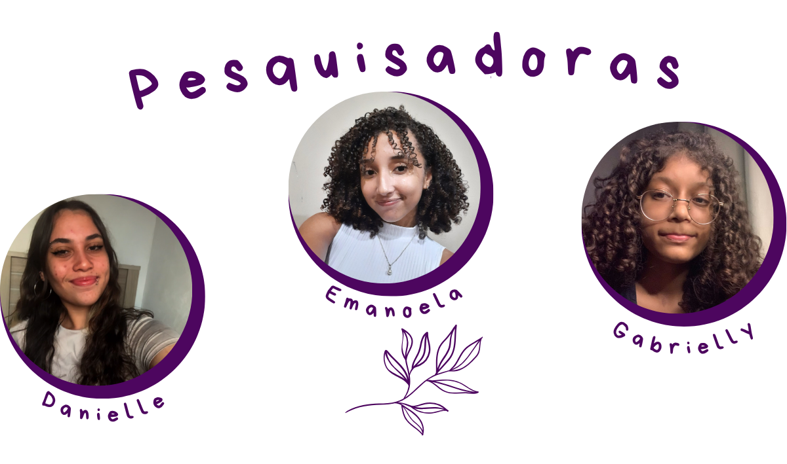
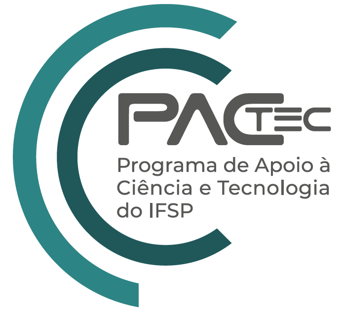

Somos alunas do Instituto Federal de Ciência, Educação e Tecnologia de São Paulo - Campus Guarulhos, cursamos os cursos de Informática (Danielle) e Mecatrônica (Emanoela e Gabrielly). Pensamos o Sistema Olympe for Safe com o intuíto de unir a tecnologia com a mobilidade urbana feminina a fim de construir um ambiente urbano cada vez mais seguro para as mulheres e que elas sejam livres para caminhar por onde quiserem.
Dr. Thiago Schumacher Barcelos, professor do IFSP - Campus Guarulhos orientou o projeto a partir de 2025, auxilixando no desenvolvimento da parte técnica do sistema.
Esse projeto conta com o apoio de
